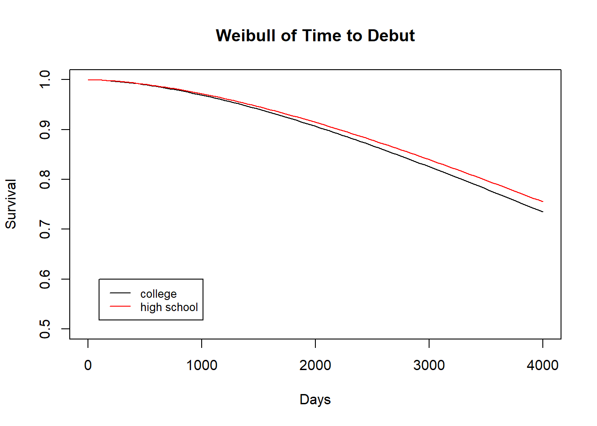

1 Introduction
The following section can be skipped for those who are already familair with survival analysis.
1.1 Introduction to Survival Analysis
Before we get deep into the conclusions we reach about time to debut trends in major league baseball, we should first introduce a few key terms. This is a survival analysis project, meaning it is a statistical analysis where the response variable being modeled is a length of time from an initiating event (a player being drafted) until a terminating event (the player making their MLB debut). You may be wondering how we account for players that do not debut, as they have no terminating event. These players are known as right censored, which means we have a lower bound on their survival time. Typically in survival analysis these observations are given a status of 0 to denote them as censored and then survival calculations are made with them included in the data. We will discuss how we experimented with this process and why censoring did not necessarily work for what we were trying to accomplish. Another important term that we will use throughout this website is “survival curves”. A survival curve is a downward sloping curve ranging from 0 to 1 on the y axis, which represents the proportion of the population remaining overtime. Finding the area under a survival curve will give the mean survival time of the population. A Kaplan-Meier curve is a variation of a survival curve that accounts for censored data. When data is right censored, the Kaplan-Meier curve will have a longer mean survival time than the original survival curve. Over the course of this website, we will introduce and explain more complex survival analysis terms including hazard functions, Cox-Snell models, likelihood ratio tests, and others.
1.2 Background
There has been much prior work that has applied survival analysis to baseball, much of it related to predicting career length. Witnauer, Rogers, and Onge studied the career length of baseball players with respect to their age at the start of their career and what decade they played in. Smith and Christensen assessed psychological skills in minor league players and found that they were predictive of current performance and later survival in major league baseball. Besides published research, many others have carried out their own statistical analyses of baseball. The relationship between career length and batting / throwing hand were examined in a blog post by Micah Melling using Kaplan Meier curves and a Cox proportional hazards model. He found that switch hitters had a much higher survival curve than other hitters, and left-handed hitters had slightly higher survival than right-handed hitters. In another interesting analysis, Scott Spencer studied how long a starting pitcher lasts in a game and looked at performance factors such as runs and baserunners allowed.
We did not find any previous analyses which examined time to debut of baseball players, which makes this project particularly unique and interesting.
1.3 Data Sources
The data set we used for our analysis combined two data sets, one containing information on MLB drafts and another containing information on player debuts. The draft data set has data on drafts between 1965-2019 and can be found here on GitHub. This data itself was compiled from the MLB Data API. The debuts data set lists players debuts between 2005-2019 and was manually put together using data from Baseball Reference.
1.4 Data Cleaning
As with any statistical analysis, a significant amount of time was spent getting the data in a usable form. Only the June Amateur Draft is included in our analysis and players drafted since 2005 in order to match the debuts data set. Since far more players are drafted than the number that reach the majors, we left joined the MLB draft data with the debuts data. In addition, because players can be drafted multiple times, we took the most recent draft date for each player.
Afterwards, we decided to focus our analysis on players who reached the majors rather than all players. We made this decision because only about 1/5 of drafted players who play in the minors make it to the big leagues, so the majority of players do not have debut dates. In the context of survival analysis, these players survive forever, and as a result this will lead to large estimates for things like mean survival time. The fact that most players survive, or never debut, is something that is unique about this analysis since it is often the case that the survival of individuals goes to 0 as time goes to infinity (e.g. survival of patient with a disease or survival of light bulbs). Because of this, it may be hard to see slight differences between groups because survival is so high. The following weibull model demonstrates this:

Even after 4000 days, or about 11 years, the model shows that most players still haven’t debuted, and it’s hard to distinguish between the survival curves of high school vs college players.
We split up our analysis into two components, or a two-phase model. In the first phase, we predicted the probability of a player reaching the majors based on factors such as batting hand, if they were drafted out of high school or college, and their position. In the second phase, we created non-parametric and parametric models of survival considering only players that debuted. Furthermore, we limited our data set of debuted players to those that were drafted between 2005-2011 in order to allow up to 8 years for players to debut (since the debuts data only goes to 2019). The reason we choose 8 years was because this was the 95% quantile of debut times, which we will show in the next section.